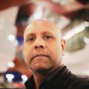
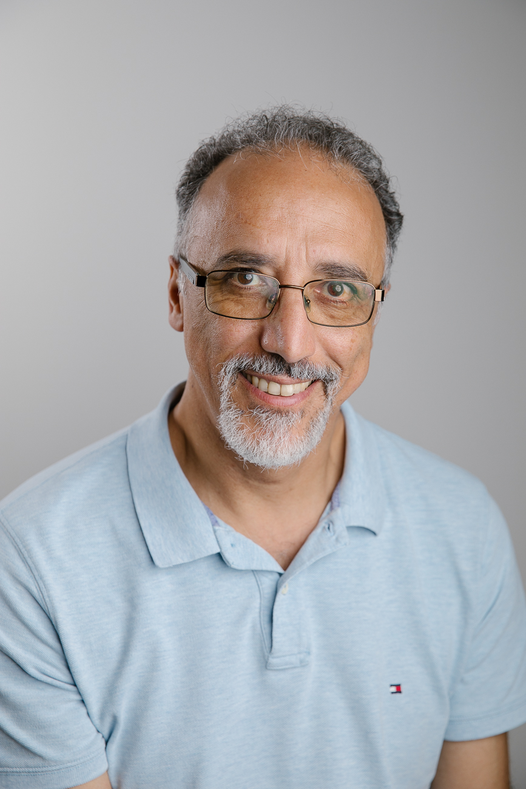
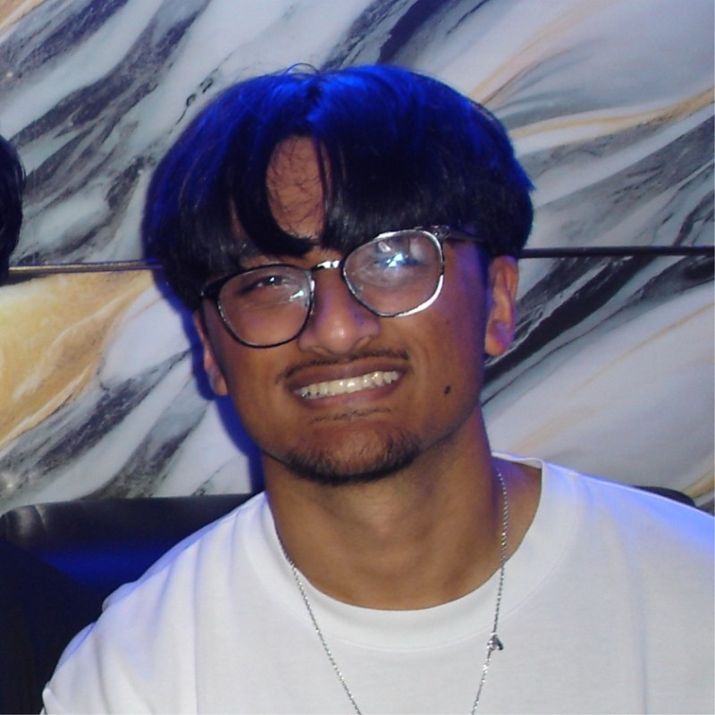

General Chair
Prof. Asif Gill
University of Technology Sydney

Organising Chair
Dr. Yining Hu
University of Technology Sydney
Dr. Avinash Singh
University of Technology Sydney
Advisory Chair
Dr. Srinivas Madhisetty
University of Technology Sydney

Prof. Nabin Sharma
University of Technology Sydney
Dr. Qinghua Lu
CSIRO
Prof. Fethi Rabhi
University of New South Wales Sydney

Web-Chair
Jonathan Toma
University of Technology Sydney

Adi Patnaik
University of Technology Sydney

Muhammad Shaukat
University of Technology Sydney